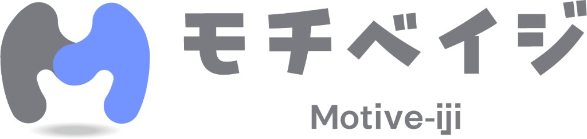
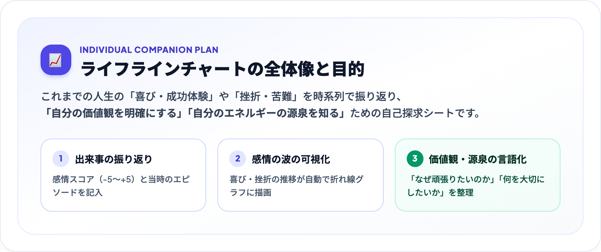
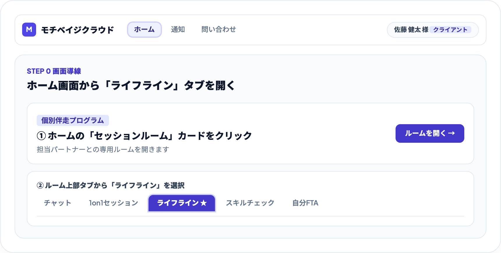
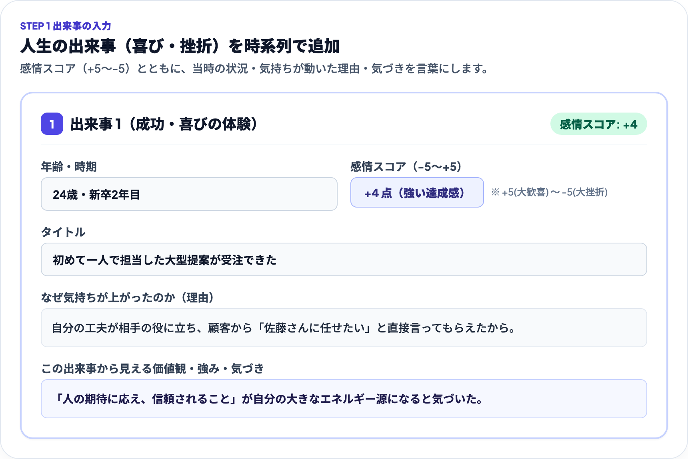
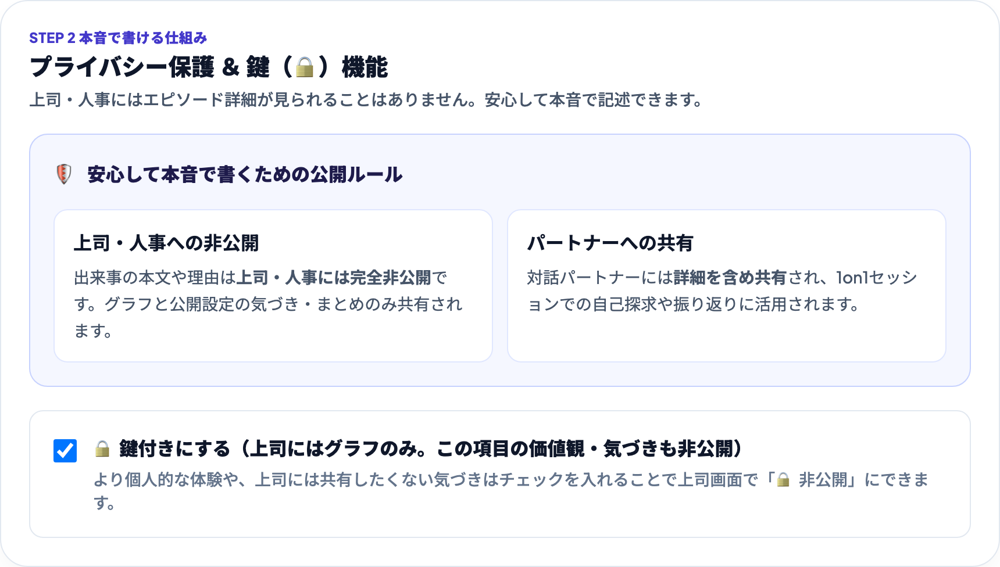
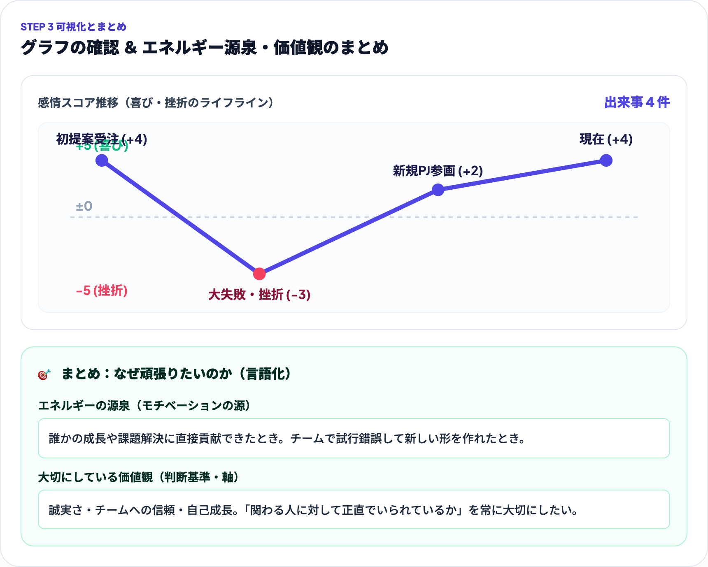

個別伴走プラン 公式操作ガイドIndividual Companion Plan
これまでの人生の出来事（喜び・挫折）を振り返り、自分の価値観やエネルギーの源泉を言語化するためのステップガイドです。受講者本人の操作画面付きで解説しています。
【対象】クライアント（受講者本人） ／ 対話パートナー

PURPOSE
担当受講者本人（クライアント）
過去の感情の起伏を可視化し、「自分の価値観を明確にする」「エネルギーの源泉を知る」ためのシートです。
💡 上司やパートナーへの見栄えを気にする必要はありません。ありのままの感情の動きを振り返りましょう。
STEP 0 画面導線
担当受講者本人（クライアント）
ログイン後、ホーム画面のセッションルームから「ライフライン」タブにアクセスします。
💡 パソコン・スマートフォンどちらからでも入力・保存が可能です。

STEP 1 出来事の入力
担当受講者本人（クライアント）
過去の感情が大きく動いた出来事を時系列で追加し、当時の手応えや理由を記入します。
💡 最初は 3〜5 件程度の大きなターニングポイント（成功・挫折）から書き始めるのがおすすめです。

STEP 2 本音で書ける安心設計
担当受講者本人（クライアント）
エピソードの個人的な詳細は上司には一切公開されません。パートナーには対話のために共有されます。
🛡️ 上司に見られる心配がないため、安心して本音の気持ちやターニングポイントを記述できます。

STEP 3 可視化 ＆ まとめ
担当受講者本人（クライアント）
出来事全体の起伏グラフを俯瞰し、「なぜ頑張りたいのか」「何を大切にしたいか」を総括します。
🤝 ここで言語化したまとめは、1on1セッションでパートナーと対話し、さらに深めていくことができます。

SUMMARY
担当受講者本人 ＆ 対話パートナー
ライフラインチャートは一度書いて終わりではなく、伴走期間中の大切な「現在地と原点」になります。
✨ 自分自身を深く知ることが、ブレない自信と持続的なモチベーションを生み出します。